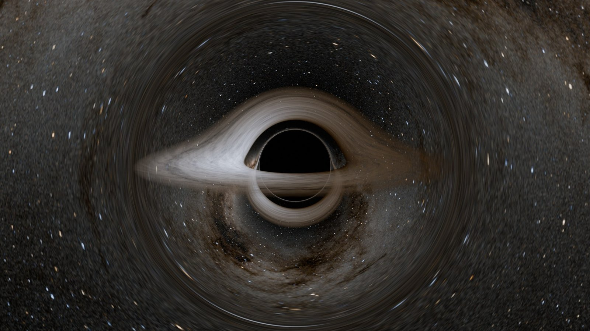
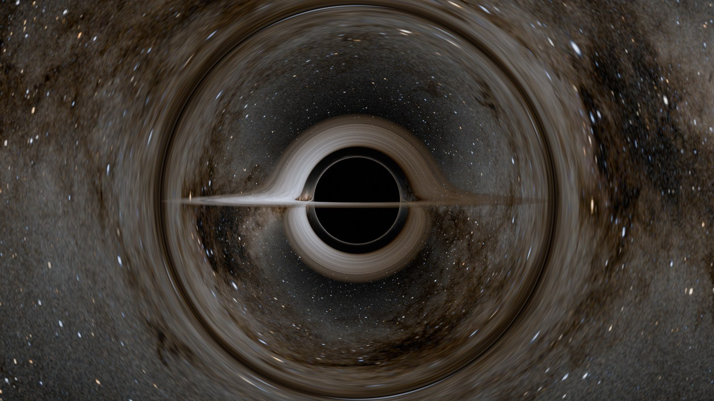
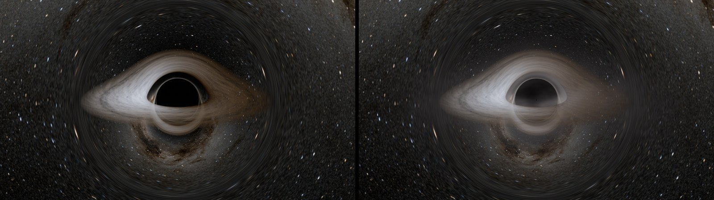
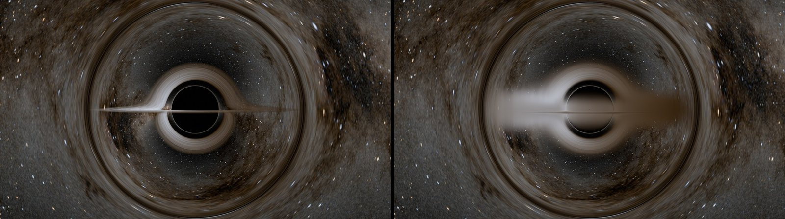
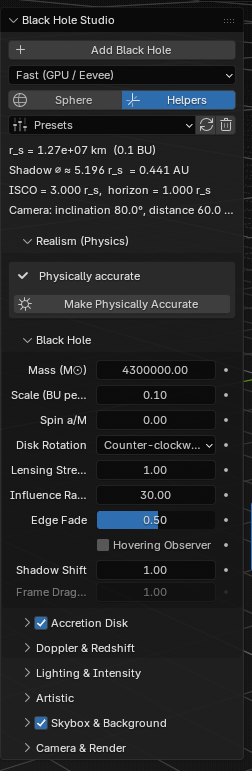
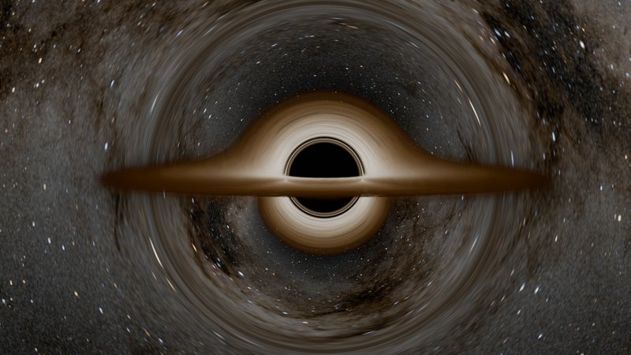
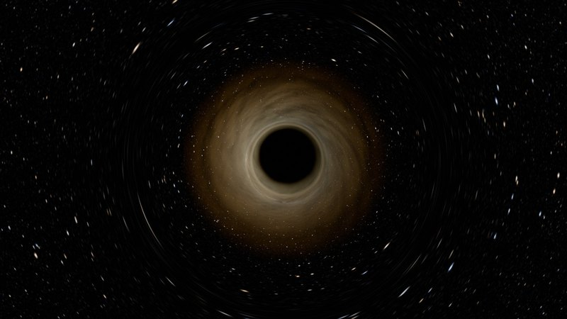
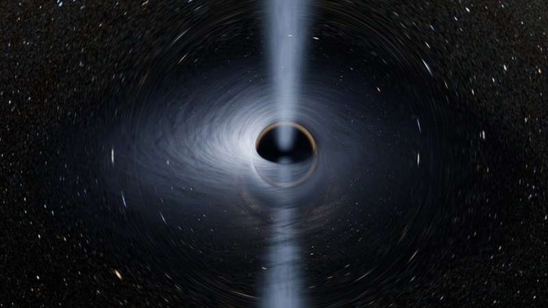
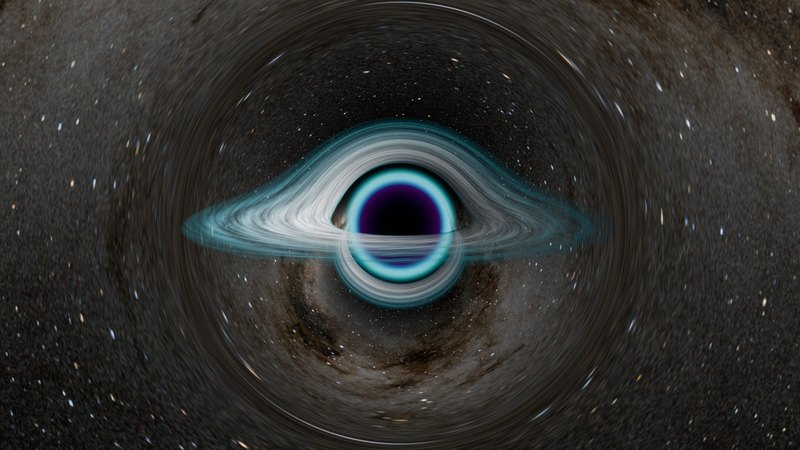
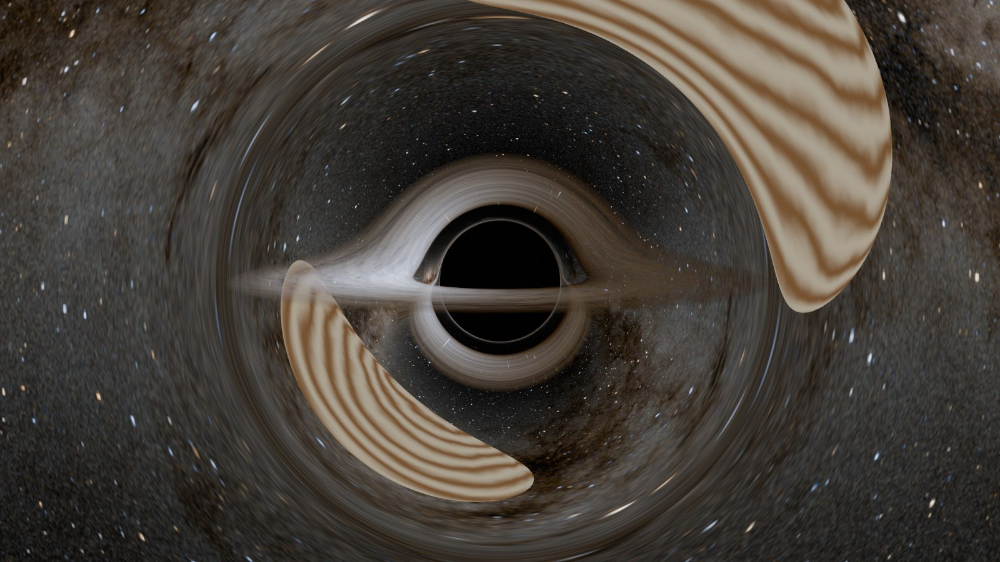

A Blender extension that adds a physically based black hole in one click. Light is bent the way general relativity says it bends, the disk glows with real blackbody colours, and the side of it rushing toward you shines brighter and bluer than the side moving away.
Every setting starts at real physics, and every one can be pushed into a stylised look. It renders in two ways: a fast mode that runs on the GPU in Cycles and Eevee, and an exact mode that traces every ray. It's free and open source, and published on Blender Extensions, so it can be installed from inside Blender. The code is on GitHub, and the latest version can be downloaded from its releases page.
Also in Unreal: Black Hole Shader

How it fits together
Adding a black hole does the heavy work once. Python traces every possible light path and bakes them into a lookup table, then writes the shader node trees. From then on, each frame renders in one of two modes. Both hand their results to the same disk shading, so a black hole looks the same in either.
Bending the light
Around a non-spinning black hole, a ray of light always stays in one flat plane, and its whole path depends on a single number: the impact parameter b, how far from the centre it would pass if there were no gravity. Far out the bending is gentle, close in it climbs steeply, and below about 2.6 times the horizon's radius the ray falls in. Those captured rays are the black shadow. The add-on never draws it; it only traces rays, and the shadow, the thin photon ring at its edge and the copy of the disk bent over the top all appear by themselves.
Two ways to render it
- Fast
- Because every path depends on one number, all of them can be traced once and saved in an image: a 1024 × 512 lookup table, one column per ray. Rendering becomes reading the right pixel, done with ordinary shader nodes, so it runs on the GPU and in Eevee as well as Cycles.
- Exact
- Every camera ray is traced step by step in an Open Shading Language shader, in Cycles on the CPU. It's slower, but it can do what a table can't: frame dragging that twists the light around a spinning hole, and jets that glow along the curved path instead of a straight line.
- Switching
- Changing mode sets the render settings that mode needs, and puts yours back when you switch away again.
The disk
The disk ends where real ones do: at the innermost stable circular orbit, the ISCO, 3 horizon radii out for a non-spinning hole and closer or further for a spinning one. Gas heats up as it falls inward, but right at the inner edge it stops rubbing and simply falls in, so the hottest ring sits a little way outside the edge. That one temperature curve sets both the colour, through Blender's blackbody conversion, and the brightness.
On top of it, the gas near the middle orbits at around half the speed of light. The side coming toward you is shifted bluer and much brighter, the side moving away redder and dimmer, and light climbing out of the hole's gravity loses energy on the way. Each effect has its own slider, where 1 is real physics and 0 switches it off.

Fog and thick disks
A thin disk is a surface: a ray hits it or misses it. Fog and a thick disk are volumes, where a ray picks up a little glow and loses a little light all the way through. The add-on walks along the curved light path in short pieces and adds up what each one contributes, so the fog is bent by the hole like everything else.


Physics first, style on top
Everything lives in one Black Hole tab in the sidebar. Every slider starts at real physics, and every one can be pushed past it: a gradient blend for colour, glow, turbulence, dust lanes and a disk texture that orbits at the right speed for its radius.
The Realism panel keeps that honest. It lists every setting that has moved away from real physics, and Make Physically Accurate puts them all back while keeping the texture, fog, sky and camera. Six presets cover the range, from the physical default to a film look and a stylised neon one.





Bending real objects
By default the hole bends the sky image. With Lens Scene Objects on, it bends the scene itself in Cycles: the lens sphere becomes a refracting surface whose normal is worked out backwards from Snell's law, so each ray leaves in exactly the direction general relativity says it should, and Cycles traces it on into the scene. A planet or a ship behind the hole shows up bent around it.

Technical breakdown
The main decisions behind the tool, and why I made them.
- One unit for everything
- Every length inside the tool is measured in the hole's own radius. Measured that way, every non-spinning black hole looks identical, so one set of light paths serves them all. A scale setting turns that radius into Blender units at the edge, and the mass only feeds a line that tells you the real size in kilometres.
- A table instead of tracing
- Since a ray's whole path depends on one number, Fast mode traces every possible ray once, when the black hole is added, and stores them in one image. The columns crowd together near the edge of the shadow, where paths change fastest, so the detail goes where it matters. The table is only rebuilt when the sphere's size or the lensing strength changes, which takes about a second; every other slider just sets a value.
- The camera can go anywhere
- A table of rays coming in from far away isn't enough once the camera flies close to the hole. A second table answers the reverse question: at what angle along its path does a ray reach a given distance? Stored directly it would be badly wrong near a ray's closest approach, so it's stored in a changed variable in which the curve becomes a straight line, and stays accurate right up to the turning point.
- Three disk hits, not one
- A ray's plane always cuts the disk's plane along a line through the centre, so a ray can only meet the disk every half turn. The shader checks three crossings: the disk seen directly, the copy bent over the top, and the thin photon ring. They're composited front to back, and the later two get their own brightness control.
- A fade, not a seam
- A real black hole bends light a little even billions of kilometres away, but a renderer can't shade the whole universe, so the bending lives inside a sphere. Cutting it off at the sphere's surface would leave a circular seam in the stars, so it fades out smoothly over the outer part instead, while rays through the middle keep the full, exact bending. A render with the sphere four times larger came out identical.
- Shaders written as Python
- Fast mode's shader runs to hundreds of nodes, far too many to wire by hand. So the maths is written as ordinary Python, and a small library, nodemath, turns each operation into the matching Blender node and connects it. The result is a real node tree you can open and inspect, with no Python running at render time. Long volume chains then overflowed the fixed stack that Cycles compiles shaders into; tying every step to the one before it by a vanishingly small amount forced them to be evaluated in order, and they fit.
- Behaving like a Blender tool
- The physics is only half the job. Settings save with the file, most sliders update instantly by writing a single value into the node tree, presets reset everything before applying their own values in one update, and animation is driven by a simple expression Blender evaluates without Python, so it works on a render farm with scripts turned off.
- Tested against an independent tracer
- A slightly wrong number in a shader just looks like a slightly different picture, so the maths is checked outside Blender against a separate ray tracer written in NumPy, including a NumPy copy of the whole Fast mode node graph. A second script builds real scenes inside Blender, applies every preset, switches modes and renders, checking that nothing breaks.
- The bug the tests missed
- In Eevee, the disk was cut off beyond a fixed circle around the hole. A glow meant only for inside the shadow was switched off elsewhere by multiplying it by zero, but outside the shadow its exponent grew until it overflowed to infinity, and zero times infinity is not a number, which blanked the pixel. Cycles happened to cope; Eevee didn't. Clamping the exponent fixed it. On a GPU, multiplying by zero only switches something off if the other side stays finite.
- Not a port of the Unreal shader
- The Unreal version raymarches every pixel in real time and leans on temporal anti-aliasing to clean up the noise. Blender renders offline, so this one can afford exact light paths, a full ray tracer, and volumes traced along the bent path, and it has to fit into an artist's scene as a tool rather than a single material. The same physics, solved twice for two very different jobs.
Further reading
The full maths, section by section, is in the Technical Breakdown, and every panel and setting is explained in the Quick Start. Both are also available as PDFs in the repository.
Credit
The direction, the physics approach and the design of the tool are mine, and I wrote a large part of the code myself. Other parts were developed with AI assistance, then reviewed, tested and tuned by me in Blender.